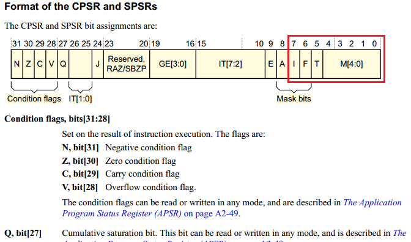
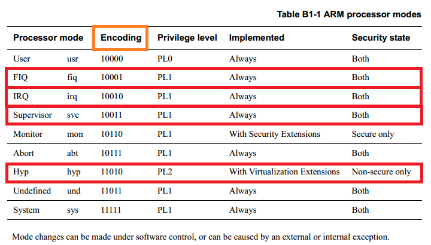

链接脚本：链接脚本的一个主要目的是描述输入文件中的各个段(数据段,代码段,堆,栈,bss)如何被映射到输出文件中,并控制输出文件的各部分在程序地址空间内的布局，地址空间包括 ROM 和 RAM。
链接器总是使用链接脚本的，如果你不提供，则链接器会使用一个缺省的脚本，这个脚本是被编译进链接器可执行文件的。
/* ************************************************************************* * * Exception vectors as described in ARM reference manuals * * Uses indirect branch to allow reaching handlers anywhere in memory. * ************************************************************************* */
/************************************************************************* * * Startup Code (reset vector) * * Do important init only if we don't start from memory! * Setup memory and board specific bits prior to relocation. * Relocate armboot to ram. Setup stack. * *************************************************************************/
.globl reset .globl save_boot_params_ret reset: /* Allow the board to save important registers */ b save_boot_params save_boot_params_ret:
reset 只有一条跳转指令 b save_boot_params，搜索得到：
1 2 3 4 5 6 7 8 9 10 11
/************************************************************************* * * void save_boot_params(u32 r0, u32 r1, u32 r2, u32 r3) * __attribute__((weak)); * * Stack pointer is not yet initialized at this moment * Don't save anything to stack even if compiled with -O0 * *************************************************************************/ ENTRY(save_boot_params) b save_boot_params_ret @ back to my caller
又是一条跳转指令 b save_boot_params_ret 标志代码如下：
1 2 3 4 5 6 7 8 9 10 11 12
save_boot_params_ret: /* * disable interrupts (FIQ and IRQ), also set the cpu to SVC32 mode, * except if in HYP mode already */ mrs r0, cpsr and r1, r0, #0x1f @ mask mode bits teq r1, #0x1a @ test for HYP mode bicne r0, r0, #0x1f @ clear all mode bits orrne r0, r0, #0x13 @ set SVC mode orr r0, r0, #0xc0 @ disable FIQ and IRQ msr cpsr,r0
主要工作：设置 cpsr(Current Program Status Register)的值，将 CPU 模式设置为 SVC32 模式，禁止 FIQ 和 IRQ。
打开《arm_architecture_reference_manual ARMv7-A and ARMv7-R edition》ARMv7架构参考手册，具体看下 cpsr 的位域结构，如下图所示：

红色方框是 save_boot_params_ret 标志要设置的位域，位域 M[4:0] 决定了当前 cpu 的工作模式，而位域F[6] 为 FIQ 中断屏蔽位，位域 I[7] 为 IRQ 中断屏蔽位，位域 T[5] 为 Thumb 执行状态位（此位没有设置，可忽略），模式位域 M[4:0] 详情如下表格所示：

接着执行后续代码：
1 2 3 4 5 6 7 8 9 10 11 12 13 14 15
/* * Setup vector: * (OMAP4 spl TEXT_BASE is not 32 byte aligned. * Continue to use ROM code vector only in OMAP4 spl) */ #if !(defined(CONFIG_OMAP44XX) && defined(CONFIG_SPL_BUILD)) /* Set V=0 in CP15 SCTLR register - for VBAR to point to vector */ mrc p15, 0, r0, c1, c0, 0 @ Read CP15 SCTLR Register bic r0, #CR_V @ V = 0 mcr p15, 0, r0, c1, c0, 0 @ Write CP15 SCTLR Register
/* the mask ROM code should have PLL and others stable */ #ifndef CONFIG_SKIP_LOWLEVEL_INIT bl cpu_init_cp15 #ifndef CONFIG_SKIP_LOWLEVEL_INIT_ONLY bl cpu_init_crit #endif #endif
mov r5, lr @ Store my Caller mrc p15, 0, r1, c0, c0, 0 @ r1 has Read Main ID Register (MIDR) mov r3, r1, lsr #20 @ get variant field and r3, r3, #0xf @ r3 has CPU variant and r4, r1, #0xf @ r4 has CPU revision mov r2, r3, lsl #4 @ shift variant field for combined value orr r2, r4, r2 @ r2 has combined CPU variant + revision
#ifdef CONFIG_ARM_ERRATA_798870 cmp r2, #0x30 @ Applies to lower than R3p0 bge skip_errata_798870 @ skip if not affected rev cmp r2, #0x20 @ Applies to including and above R2p0 blt skip_errata_798870 @ skip if not affected rev
mrc p15, 1, r0, c15, c0, 0 @ read l2 aux ctrl reg orr r0, r0, #1 << 7 @ Enable hazard-detect timeout push {r1-r5} @ Save the cpu info registers bl v7_arch_cp15_set_l2aux_ctrl isb @ Recommended ISB after l2actlr update pop {r1-r5} @ Restore the cpu info - fall through skip_errata_798870: #endif
#ifdef CONFIG_ARM_ERRATA_801819 cmp r2, #0x24 @ Applies to lt including R2p4 bgt skip_errata_801819 @ skip if not affected rev cmp r2, #0x20 @ Applies to including and above R2p0 blt skip_errata_801819 @ skip if not affected rev mrc p15, 0, r0, c0, c0, 6 @ pick up REVIDR reg and r0, r0, #1 << 3 @ check REVIDR[3] cmp r0, #1 << 3 beq skip_errata_801819 @ skip erratum if REVIDR[3] is set
mrc p15, 0, r0, c1, c0, 1 @ read auxilary control register orr r0, r0, #3 << 27 @ Disables streaming. All write-allocate @ lines allocate in the L1 or L2 cache. orr r0, r0, #3 << 25 @ Disables streaming. All write-allocate @ lines allocate in the L1 cache. push {r1-r5} @ Save the cpu info registers bl v7_arch_cp15_set_acr pop {r1-r5} @ Restore the cpu info - fall through skip_errata_801819: #endif
#ifdef CONFIG_ARM_ERRATA_454179 cmp r2, #0x21 @ Only on < r2p1 bge skip_errata_454179
mrc p15, 0, r0, c1, c0, 1 @ Read ACR orr r0, r0, #(0x3 << 6) @ Set DBSM(BIT7) and IBE(BIT6) bits push {r1-r5} @ Save the cpu info registers bl v7_arch_cp15_set_acr pop {r1-r5} @ Restore the cpu info - fall through
skip_errata_454179: #endif
#ifdef CONFIG_ARM_ERRATA_430973 cmp r2, #0x21 @ Only on < r2p1 bge skip_errata_430973
mrc p15, 0, r0, c1, c0, 1 @ Read ACR orr r0, r0, #(0x1 << 6) @ Set IBE bit push {r1-r5} @ Save the cpu info registers bl v7_arch_cp15_set_acr pop {r1-r5} @ Restore the cpu info - fall through
skip_errata_430973: #endif
#ifdef CONFIG_ARM_ERRATA_621766 cmp r2, #0x21 @ Only on < r2p1 bge skip_errata_621766
mrc p15, 0, r0, c1, c0, 1 @ Read ACR orr r0, r0, #(0x1 << 5) @ Set L1NEON bit push {r1-r5} @ Save the cpu info registers bl v7_arch_cp15_set_acr pop {r1-r5} @ Restore the cpu info - fall through
skip_errata_621766: #endif
mov pc, r5 @ back to my caller ENDPROC(cpu_init_cp15)
#if !defined(CONFIG_SKIP_LOWLEVEL_INIT) && \ !defined(CONFIG_SKIP_LOWLEVEL_INIT_ONLY) /************************************************************************* * * CPU_init_critical registers * * setup important registers * setup memory timing * *************************************************************************/ ENTRY(cpu_init_crit) /* * Jump to board specific initialization... * The Mask ROM will have already initialized * basic memory. Go here to bump up clock rate and handle * wake up conditions. */ b lowlevel_init @ go setup pll,mux,memory ENDPROC(cpu_init_crit) #endif
ENTRY(lowlevel_init) /* * Setup a temporary stack. Global data is not available yet. */ #if defined(CONFIG_SPL_BUILD) && defined(CONFIG_SPL_STACK) ldr sp, =CONFIG_SPL_STACK #else ldr sp, =CONFIG_SYS_INIT_SP_ADDR #endif bic sp, sp, #7 /* 8-byte alignment for ABI compliance */ #ifdef CONFIG_SPL_DM mov r9, #0 #else /* * Set up global data for boards that still need it. This will be * removed soon. */ #ifdef CONFIG_SPL_BUILD ldr r9, =gdata #else sub sp, sp, #GD_SIZE bic sp, sp, #7 mov r9, sp #endif #endif /* * Save the old lr(passed in ip) and the current lr to stack */ push {ip, lr}
/* * Call the very early init function. This should do only the * absolute bare minimum to get started. It should not: * * - set up DRAM * - use global_data * - clear BSS * - try to start a console * * For boards with SPL this should be empty since SPL can do all of * this init in the SPL board_init_f() function which is called * immediately after this. */ bl s_init pop {ip, pc} ENDPROC(lowlevel_init)
/* Due to hardware limitation, on MX6Q we need to gate/ungate all PFDs * to make sure PFD is working right, otherwise, PFDs may * not output clock after reset, MX6DL and MX6SL have added 396M pfd * workaround in ROM code, as bus clock need it */
ulong board_init_f_alloc_reserve(ulong top) { /* Reserve early malloc arena */ #if defined(CONFIG_SYS_MALLOC_F) top -= CONFIG_SYS_MALLOC_F_LEN; #endif /* LAST : reserve GD (rounded up to a multiple of 16 bytes) */ top = rounddown(top-sizeof(struct global_data), 16);
typedefstructglobal_data { bd_t *bd; unsignedlong flags; unsignedint baudrate; unsignedlong cpu_clk; /* CPU clock in Hz! */ unsignedlong bus_clk; /* We cannot bracket this with CONFIG_PCI due to mpc5xxx */ unsignedlong pci_clk; unsignedlong mem_clk; #if defined(CONFIG_LCD) || defined(CONFIG_VIDEO) unsignedlong fb_base; /* Base address of framebuffer mem */ #endif #if defined(CONFIG_POST) || defined(CONFIG_LOGBUFFER) unsignedlong post_log_word; /* Record POST activities */ unsignedlong post_log_res; /* success of POST test */ unsignedlong post_init_f_time; /* When post_init_f started */ #endif #ifdef CONFIG_BOARD_TYPES unsignedlong board_type; #endif unsignedlong have_console; /* serial_init() was called */ #if CONFIG_IS_ENABLED(PRE_CONSOLE_BUFFER) unsignedlong precon_buf_idx; /* Pre-Console buffer index */ #endif unsignedlong env_addr; /* Address of Environment struct */ unsignedlong env_valid; /* Checksum of Environment valid? */
unsignedlong ram_top; /* Top address of RAM used by U-Boot */ unsignedlong relocaddr; /* Start address of U-Boot in RAM */ phys_size_t ram_size; /* RAM size */ unsignedlong mon_len; /* monitor len */ unsignedlong irq_sp; /* irq stack pointer */ unsignedlong start_addr_sp; /* start_addr_stackpointer */ unsignedlong reloc_off; structglobal_data *new_gd;/* relocated global data */
#ifdef CONFIG_DM structudevice *dm_root;/* Root instance for Driver Model */ structudevice *dm_root_f;/* Pre-relocation root instance */ structlist_headuclass_root;/* Head of core tree */ #endif #ifdef CONFIG_TIMER structudevice *timer;/* Timer instance for Driver Model */ #endif
constvoid *fdt_blob; /* Our device tree, NULL if none */ void *new_fdt; /* Relocated FDT */ unsignedlong fdt_size; /* Space reserved for relocated FDT */ structjt_funcs *jt;/* jump table */ char env_buf[32]; /* buffer for getenv() before reloc. */ #ifdef CONFIG_TRACE void *trace_buff; /* The trace buffer */ #endif #if defined(CONFIG_SYS_I2C) int cur_i2c_bus; /* current used i2c bus */ #endif #ifdef CONFIG_SYS_I2C_MXC void *srdata[10]; #endif unsignedlong timebase_h; unsignedlong timebase_l; #ifdef CONFIG_SYS_MALLOC_F_LEN unsignedlong malloc_base; /* base address of early malloc() */ unsignedlong malloc_limit; /* limit address */ unsignedlong malloc_ptr; /* current address */ #endif #ifdef CONFIG_PCI structpci_controller *hose;/* PCI hose for early use */ phys_addr_t pci_ram_top; /* top of region accessible to PCI */ #endif #ifdef CONFIG_PCI_BOOTDELAY int pcidelay_done; #endif structudevice *cur_serial_dev;/* current serial device */ structarch_global_dataarch;/* architecture-specific data */ #ifdef CONFIG_CONSOLE_RECORD structmembuffconsole_out;/* console output */ structmembuffconsole_in;/* console input */ #endif #ifdef CONFIG_DM_VIDEO ulong video_top; /* Top of video frame buffer area */ ulong video_bottom; /* Bottom of video frame buffer area */ #endif } gd_t;
/* * clear GD entirely and set it up. * Use gd_ptr, as gd may not be properly set yet. */
gd_ptr = (struct global_data *)base; /* zero the area */ memset(gd_ptr, '\0', sizeof(*gd)); /* set GD unless architecture did it already */ #if !defined(CONFIG_ARM) arch_setup_gd(gd_ptr); #endif /* next alloc will be higher by one GD plus 16-byte alignment */ base += roundup(sizeof(struct global_data), 16);
/* * record early malloc arena start. * Use gd as it is now properly set for all architectures. */
#if defined(CONFIG_SYS_MALLOC_F) /* go down one 'early malloc arena' */ gd->malloc_base = base; /* next alloc will be higher by one 'early malloc arena' size */ base += CONFIG_SYS_MALLOC_F_LEN; #endif }
ldr r0, =__bss_start /* this is auto-relocated! */
#ifdef CONFIG_USE_ARCH_MEMSET ldr r3, =__bss_end /* this is auto-relocated! */ mov r1, #0x00000000 /* prepare zero to clear BSS */
subs r2, r3, r0 /* r2 = memset len */ bl memset #else ldr r1, =__bss_end /* this is auto-relocated! */ mov r2, #0x00000000 /* prepare zero to clear BSS */
clbss_l:cmp r0, r1 /* while not at end of BSS */ #if defined(CONFIG_CPU_V7M) itt lo #endif strlo r2, [r0] /* clear 32-bit BSS word */ addlo r0, r0, #4 /* move to next */ blo clbss_l #endif
这部分代码主要是用来清除 BSS 段。
board_init_f 函数
初始化一系列外设：串口、定时器等
初始化 gd 的各个成员变量，uboot 会将自己重定位到 DRAM 最后面的地址区域，也就是将自己拷贝到 DRAM 最后面的内存区域中。目的是给 Linux 腾出空间，防止 Linux kernel 覆盖掉 uboot，将 DRAM 前面的区域完整的空出来。
voidboard_init_f(ulong boot_flags) { #ifdef CONFIG_SYS_GENERIC_GLOBAL_DATA /* * For some architectures, global data is initialized and used before * calling this function. The data should be preserved. For others, * CONFIG_SYS_GENERIC_GLOBAL_DATA should be defined and use the stack * here to host global data until relocation. */ gd_t data;
gd = &data;
/* * Clear global data before it is accessed at debug print * in initcall_run_list. Otherwise the debug print probably * get the wrong value of gd->have_console. */ zero_global_data(); #endif
gd->flags = boot_flags; gd->have_console = 0;
if (initcall_run_list(init_sequence_f)) hang();
#if !defined(CONFIG_ARM) && !defined(CONFIG_SANDBOX) && \ !defined(CONFIG_EFI_APP) && !CONFIG_IS_ENABLED(X86_64) /* NOTREACHED - jump_to_copy() does not return */ hang(); #endif }
/* * void relocate_code(addr_moni) * * This function relocates the monitor code. * * NOTE: * To prevent the code below from containing references with an R_ARM_ABS32 * relocation record type, we never refer to linker-defined symbols directly. * Instead, we declare literals which contain their relative location with * respect to relocate_code, and at run time, add relocate_code back to them. */
void board_init_r(gd_t *new_gd, ulong dest_addr) { /* * Set up the new global data pointer. So far only x86 does this * here. * TODO(sjg@chromium.org): Consider doing this for all archs, or * dropping the new_gd parameter. */ #if CONFIG_IS_ENABLED(X86_64) arch_setup_gd(new_gd); #endif
/* * Over time we hope to remove these functions with code fragments and * stub funtcions, and instead call the relevant function directly. * * We also hope to remove most of the driver-related init and do it if/when * the driver is later used. * * TODO: perhaps reset the watchdog in the initcall function after each call? */ staticinit_fnc_t init_sequence_r[] = { initr_trace, /* 初始化与跟踪调试相关部分 */ initr_reloc, /* 标记重定位完成 */ initr_caches, /* 使能cache */ initr_reloc_global_data, /* 初始化重定位后的gd成员 */ initr_barrier, /* imx6ull未用到 */ initr_malloc, /* 初始化malloc */ log_init, /* log初始化 */ initr_bootstage, /* Needs malloc() but has its own timer */ initr_console_record, /* 初始化控台 */ bootstage_relocate, initr_dm, /* 设备模型初始化 */ board_init, /* 板级初始化 */ efi_memory_init, /* efi_memory初始化 */ stdio_init_tables, /* 标准输入输出及标准错误等初始化 */ initr_serial, /* 串口初始化 */ initr_announce, /* 跟调试相关 */ power_init_board, /* 电源芯片初始化 */ initr_nand, /* nandflash初始化 */ initr_mmc, /* mmc初始化 */ initr_env, /* 环境变量初始化 */ initr_secondary_cpu, /* 其他cpu初始化，由于imx6ull为单核cpu故忽略 */ stdio_add_devices, /* 输入输出设备初始化 */ initr_jumptable, /* 初始化跳转表 */ console_init_r, /* 控制台初始化 */ interrupt_init, /* 中断初始化 */ initr_enable_interrupts, /* 中断使能 */ /* PPC has a udelay(20) here dating from 2002. Why? */ initr_ethaddr, /* 网络初始化 */ board_late_init, /* 板子后续初始化 */ initr_fastboot_setup, initr_net, /* 网络初始化 */ initr_check_fastboot, run_main_loop, /* 运行主循环 */ };
run_main_loop 函数
run_main_loop 函数在文件 common/board_r.c 中定义：
1 2 3 4 5 6 7 8 9 10
staticintrun_main_loop(void) { #ifdef CONFIG_SANDBOX sandbox_main_loop_init(); #endif /* main_loop() can return to retry autoboot, if so just run it again */ for (;;) main_loop(); return0; }
/* We come here after U-Boot is initialised and ready to process commands */ voidmain_loop(void) { constchar *s; // 打印启动进度 bootstage_mark_name(BOOTSTAGE_ID_MAIN_LOOP, "main_loop");
// 打印uboot版本号 #ifdef CONFIG_VERSION_VARIABLE setenv("ver", version_string); /* set version variable */ #endif/* CONFIG_VERSION_VARIABLE */
voidcli_loop(void) { #ifdef CONFIG_HUSH_PARSER parse_file_outer(); /* This point is never reached */ for (;;); #elif defined(CONFIG_CMDLINE) cli_simple_loop(); #else printf("## U-Boot command line is disabled. Please enable CONFIG_CMDLINE\n"); #endif/*CONFIG_HUSH_PARSER*/ }
/* * Legacy and FIT format headers used by do_bootm() and do_bootm_<os>() * routines. */ typedefstructbootm_headers { /* * Legacy os image header, if it is a multi component image * then boot_get_ramdisk() and get_fdt() will attempt to get * data from second and third component accordingly. */ image_header_t *legacy_hdr_os; /* image header pointer */ image_header_t legacy_hdr_os_copy; /* header copy */ ulong legacy_hdr_valid;
#ifndef USE_HOSTCC image_info_t os; /* os image info */ ulong ep; /* entry point of OS */
ulong rd_start, rd_end;/* ramdisk start/end */
char *ft_addr; /* flat dev tree address */ ulong ft_len; /* length of flat device tree */
typedefstructimage_info { ulong start, end; /* start/end of blob */ ulong image_start, image_len; /* start of image within blob, len of image */ ulong load; /* load addr for the image */ uint8_t comp, type, os; /* compression, type of image, os type */ uint8_t arch; /* CPU architecture */ } image_info_t;
/* * Handle the BOOTM_STATE_FINDOTHER state ourselves as we do not * have a header that provide this informaiton. */ if (bootm_find_images(flag, argc, argv)) return1; return0; }
调用函数 do_bootm_states，执行 BOOTM_STATE_START 阶段。
设置 images 的 ep 成员变量，也就是系统镜像的入口点，使用 bootz 命令启动系统的时候就会设置系统在 DRAM 中的存储位置，这个存储位置就是系统镜像的入口点，因此 images->ep=0X80800000。
调用 bootz_setup 函数，此函数会判断当前的系统镜像文件是否为 Linux 的镜像文件，并且会打印出镜像相关信息。
/** * bootm_find_images - wrapper to find and locate various images * @flag: Ignored Argument * @argc: command argument count * @argv: command argument list * * boot_find_images() will attempt to load an available ramdisk, * flattened device tree, as well as specifically marked * "loadable" images (loadables are FIT only) * * Note: bootm_find_images will skip an image if it is not found * * @return: * 0, if all existing images were loaded correctly * 1, if an image is found but corrupted, or invalid */ intbootm_find_images(int flag, int argc, char * const argv[]) { int ret;
/* find ramdisk */ ret = boot_get_ramdisk(argc, argv, &images, IH_INITRD_ARCH, &images.rd_start, &images.rd_end); if (ret) { puts("Ramdisk image is corrupt or invalid\n"); return1; }
#if IMAGE_ENABLE_OF_LIBFDT /* find flattened device tree */ ret = boot_get_fdt(flag, argc, argv, IH_ARCH_DEFAULT, &images, &images.ft_addr, &images.ft_len); if (ret) { puts("Could not find a valid device tree\n"); return1; } set_working_fdt_addr((ulong)images.ft_addr); #endif
/** * Execute selected states of the bootm command. * * Note the arguments to this state must be the first argument, Any 'bootm' * or sub-command arguments must have already been taken. * * Note that if states contains more than one flag it MUST contain * BOOTM_STATE_START, since this handles and consumes the command line args. * * Also note that aside from boot_os_fn functions and bootm_load_os no other * functions we store the return value of in 'ret' may use a negative return * value, without special handling. * * @param cmdtp Pointer to bootm command table entry * @param flag Command flags (CMD_FLAG_...) * @param argc Number of subcommand arguments (0 = no arguments) * @param argv Arguments * @param states Mask containing states to run (BOOTM_STATE_...) * @param images Image header information * @param boot_progress 1 to show boot progress, 0 to not do this * @return 0 if ok, something else on error. Some errors will cause this * function to perform a reboot! If states contains BOOTM_STATE_OS_GO * then the intent is to boot an OS, so this function will not return * unless the image type is standalone. */ intdo_bootm_states(cmd_tbl_t *cmdtp, int flag, int argc, char * const argv[], int states, bootm_headers_t *images, int boot_progress) { boot_os_fn *boot_fn; ulong iflag = 0; int ret = 0, need_boot_fn;
images->state |= states;
/* * Work through the states and see how far we get. We stop on * any error. */ if (states & BOOTM_STATE_START) ret = bootm_start(cmdtp, flag, argc, argv);
if (!ret && (states & BOOTM_STATE_FINDOS)) ret = bootm_find_os(cmdtp, flag, argc, argv);
if (!ret && (states & BOOTM_STATE_FINDOTHER)) ret = bootm_find_other(cmdtp, flag, argc, argv);
/* Load the OS */ if (!ret && (states & BOOTM_STATE_LOADOS)) { ulong load_end;
iflag = bootm_disable_interrupts(); ret = bootm_load_os(images, &load_end, 0); if (ret == 0) lmb_reserve(&images->lmb, images->os.load, (load_end - images->os.load)); elseif (ret && ret != BOOTM_ERR_OVERLAP) goto err; elseif (ret == BOOTM_ERR_OVERLAP) ret = 0; }
#if IMAGE_ENABLE_OF_LIBFDT && defined(CONFIG_LMB) if (!ret && (states & BOOTM_STATE_FDT)) { boot_fdt_add_mem_rsv_regions(&images->lmb, images->ft_addr); ret = boot_relocate_fdt(&images->lmb, &images->ft_addr, &images->ft_len); } #endif
/* From now on, we need the OS boot function */ if (ret) return ret; boot_fn = bootm_os_get_boot_func(images->os.os); need_boot_fn = states & (BOOTM_STATE_OS_CMDLINE | BOOTM_STATE_OS_BD_T | BOOTM_STATE_OS_PREP | BOOTM_STATE_OS_FAKE_GO | BOOTM_STATE_OS_GO); if (boot_fn == NULL && need_boot_fn) { if (iflag) enable_interrupts(); printf("ERROR: booting os '%s' (%d) is not supported\n", genimg_get_os_name(images->os.os), images->os.os); bootstage_error(BOOTSTAGE_ID_CHECK_BOOT_OS); return1; }
/* Call various other states that are not generally used */ if (!ret && (states & BOOTM_STATE_OS_CMDLINE)) ret = boot_fn(BOOTM_STATE_OS_CMDLINE, argc, argv, images); if (!ret && (states & BOOTM_STATE_OS_BD_T)) ret = boot_fn(BOOTM_STATE_OS_BD_T, argc, argv, images); if (!ret && (states & BOOTM_STATE_OS_PREP)) { #if defined(CONFIG_SILENT_CONSOLE) && !defined(CONFIG_SILENT_U_BOOT_ONLY) if (images->os.os == IH_OS_LINUX) fixup_silent_linux(); #endif ret = boot_fn(BOOTM_STATE_OS_PREP, argc, argv, images); }
#ifdef CONFIG_TRACE /* Pretend to run the OS, then run a user command */ if (!ret && (states & BOOTM_STATE_OS_FAKE_GO)) { char *cmd_list = getenv("fakegocmd");
ret = boot_selected_os(argc, argv, BOOTM_STATE_OS_FAKE_GO, images, boot_fn); if (!ret && cmd_list) ret = run_command_list(cmd_list, -1, flag); } #endif
/* Check for unsupported subcommand. */ if (ret) { puts("subcommand not supported\n"); return ret; }
/* Now run the OS! We hope this doesn't return */ if (!ret && (states & BOOTM_STATE_OS_GO)) ret = boot_selected_os(argc, argv, BOOTM_STATE_OS_GO, images, boot_fn);
/* Deal with any fallout */ err: if (iflag) enable_interrupts();
/* Main Entry point for arm bootm implementation * * Modeled after the powerpc implementation * DIFFERENCE: Instead of calling prep and go at the end * they are called if subcommand is equal 0. */ intdo_bootm_linux(int flag, int argc, char * const argv[], bootm_headers_t *images) { /* No need for those on ARM */ if (flag & BOOTM_STATE_OS_BD_T || flag & BOOTM_STATE_OS_CMDLINE) return-1;
if (flag & BOOTM_STATE_OS_PREP) { boot_prep_linux(images); return0; }
s = getenv("machid"); if (s) { if (strict_strtoul(s, 16, &machid) < 0) { debug("strict_strtoul failed!\n"); return; } printf("Using machid 0x%lx from environment\n", machid); }
debug("## Transferring control to Linux (at address %08lx)" \ "...\n", (ulong) kernel_entry); bootstage_mark(BOOTSTAGE_ID_RUN_OS); announce_and_cleanup(fake);
变量 machid 保存机器 ID，如果不使用设备树的话这个机器 ID 会被传递给 Linux 内核，Linux 内核会在自己的机器 ID 列表里面查找是否存在与 uboot 传递进来的 machid 匹配的项目，如果存在就说明 Linux 内核支持这个机器，那么 Linux 就会启动！如果使用设备树的话这个 machid 就无效了，设备树存有一个“兼容性”这个属性，Linux 内核会比较“兼容性”属性的值(字符串)来查看是否支持这个机器。